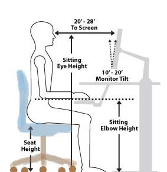

5 Tips To Prevent Neck Pain During Computer Work
As a designer, you can spend hours a day in front of computers without thinking of its impact on your body. Sometimes, You might notice that your neck is getting stiff and sore, and you might even have a slight headache. That can be explained by the fact that you might be physically stressing your body daily without realizing it. That can be caused by extending your wrists, slouching, sitting without foot support; to look at poorly placed monitors. Here are few tips for you that can easily help you avoid neck pain while using your computer.
